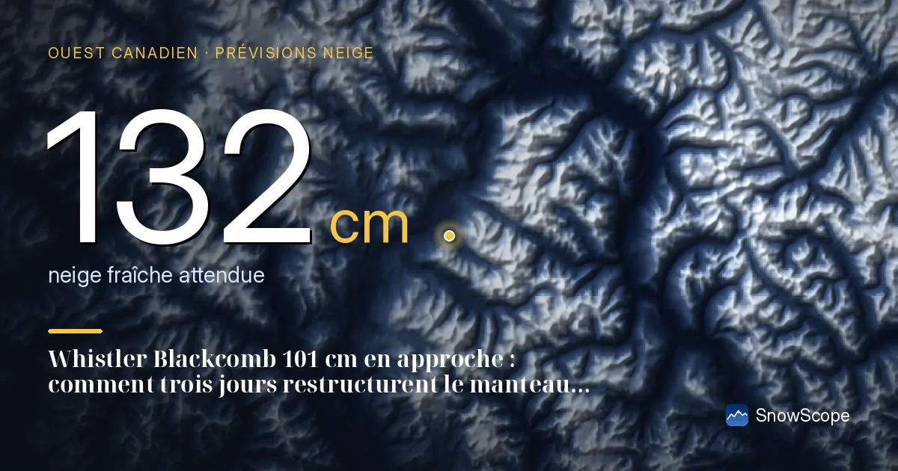
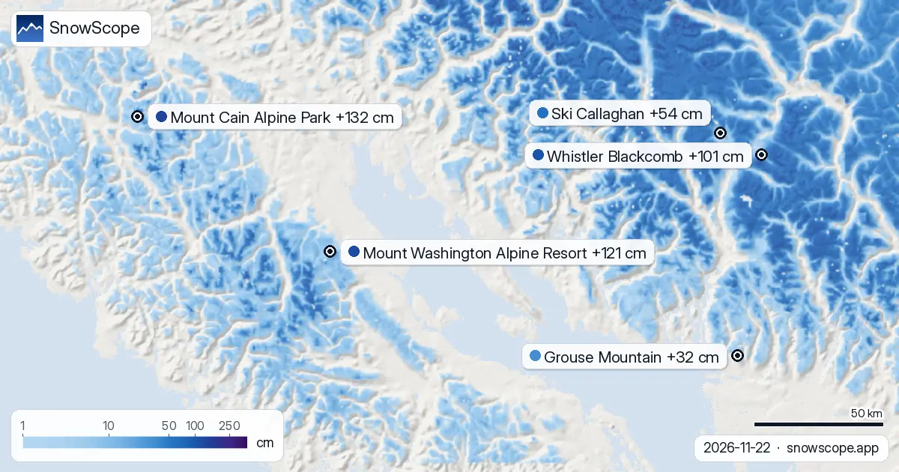

Whistler Blackcomb 101 cm en approche : comment trois jours restructurent le manteau neigeux de l'Ouest canadien
Trois jours de neige abondante vont transformer le manteau neigeux de l'Ouest canadien, Whistler Blackcomb recevant 101 cm d'ici le 25 novembre—plus que la profondeur typique à mi-pente en ce moment. Mount Cain Alpine Park en recevra encore davantage : 132 cm, tandis que la plupart des petites stations peinent avec leur base mince de début de saison.
Consultez les prévisions neige en temps réel pour Whistler Blackcomb sur l'application SnowScopeHauteurs de neige, alertes poudreuse et carte 3D, gratuitement.
Où tombe le plus de neige
Mount Cain Alpine Park remporte la prochaine période de prévisions avec 132 cm de neige nouvelle d'ici le 25 novembre. Ce n'est pas typique pour fin novembre : la mi-pente compte seulement 25 cm aujourd'hui, donc la neige en approche va à peu près tripler la profondeur existante. Whistler Blackcomb, leader neigeux établi de la région, recevra 101 cm au même moment—substantiel, mais 31 cm de moins que Mount Cain. À mi-pente de Whistler (1 456 m), 51 cm reposent au sol maintenant ; la neige nouvelle va enfouir les rochers qui sont encore près de la surface.
Mount Washington Alpine Resort et Ski Callaghan en verront moins. Mount Washington reçoit 121 cm d'ici le 25 novembre, la plupart tombant le 24 novembre. Ski Callaghan, plus bas et plus à l'intérieur, ne reçoit que 54 cm. Ces chiffres montrent un schéma clair : les terrains exposés et élevés en captent le plus ; les vallées abritées ou basses ratent l'événement principal.
| Station | Hauteur de neige | Neige fraîche, 72 h | Attendu, jours suivants | Sommet |
|---|---|---|---|---|
| Mount Cain Alpine Park | 92 cm | 2 cm | 132 cm | 1 616 m |
| Mount Washington Alpine Resort | 73 cm | 9 cm | 121 cm | 1 569 m |
| Whistler Blackcomb | 153 cm | 5 cm | 101 cm | 2 259 m |
| Ski Callaghan | 16 cm | 3 cm | 54 cm | 998 m |
| Grouse Mountain | 9 cm | 5 cm | 32 cm | 1 228 m |

L'altitude compte : les pentes hautes gagnent gros
Au sommet de Mount Cain (1 616 m), SnowScope montre 103 cm de neige nouvelle dans les sept prochains jours. À la base (1 190 m), seulement 65 cm tombent—un écart de 38 cm. C'est la tempête hivernale classique : les pentes hautes accumulent ; les pentes basses perdent de la neige au vent et à l'air plus chaud. Le niveau de congélation se situe entre 620 m et 1 100 m durant la période de prévision, donc la base verra du mélange pluie-neige le jour le plus chaud (24 novembre).
Le schéma de Whistler est encore plus accentué. Le sommet (2 259 m) gagnera 116 cm ; la base (653 m) à peine 11 cm. À mi-pente (1 456 m), attendez-vous à 96 cm. Cette séparation d'altitude explique pourquoi le terrain en haut de montagne sera skiable en quelques jours, tandis que les pistes basses restent minces ou dégagées.
Le jour le plus intense : 24 novembre
Le 24 novembre sort du lot. Mount Cain reçoit 68 cm ce jour-là seulement—plus de la moitié de son total sur trois jours. Whistler en reçoit 40 cm, Mount Washington 76 cm. C'est quand le système se trouve au-dessus de la région et presse le plus fort. En contraste, le 23 novembre est plus léger partout ; le 25 novembre conclut avec des chutes modérées tandis que la dépression s'éloigne.
Le 24 novembre, le niveau de congélation à Whistler atteint 1 170–1 490 m—un signal d'alerte pour les pistes basses. À Mount Washington il monte à 740–1 260 m. Cette vague d'air chaud signifie que les chutes les plus abondantes seront sur de la neige mouillée et plus lourde à mi-pente et de la pluie en basse altitude. Les pentes hautes verront de la neige plus sèche et poudreuse.
Comment cela se compare à la normale et aux hivers récents
La mi-pente de Mount Cain (1 403 m) compte 25 cm aujourd'hui ; à cette date lors d'hivers passés, la médiane était 59 cm. Nous sommes 34 cm sous la normale—mince pour fin novembre. Les 86 cm en approche à cette hauteur vont dépasser la norme de novembre et faire monter le site au-dessus du 32e percentile des saisons passées, bien que toujours pas profond selon les standards hivernaux.
Whistler à mi-pente (1 456 m) affiche 51 cm aujourd'hui contre une normale de 124 cm—presque 73 cm de retard. La région tourne faible pour la saison. Les 96 cm de neige suivants aideront, mais Whistler finira quand même sous la médiane selon le bilan du 25 novembre. La neige de début de saison est toujours mince ; cette prévision n'efface pas cette réalité.
Conclusion pratique pour le terrain
Trois jours de neige substantielle créeront des conditions skiables sur les pentes hautes à Whistler, Mount Cain et Mount Washington d'ici le 26 novembre. Les risques de rochers diminueront mais ne disparaîtront pas, particulièrement sous 1 200 m. Les petites stations comme Grouse Mountain et Ski Callaghan resteront marginales—la neige nouvelle aide, mais la base est trop mince pour un ski sûr et amusant.
Surveillez le niveau de congélation le 24 novembre. À Whistler il monte à 1 170 m ; à Mount Washington, 740 m. Cela signifie neige mouillée et pluie sous ces hauteurs. La conduite en haut de montagne sera plus rapide. Attendez-vous à du travail du vent sur les crêtes exposées après l'arrivée de la neige ; la poudreuse fraîche ne dure pas longtemps dans les montagnes côtières.
Conseils aux skieurs
- Allez à Mount Cain Alpine Park ou au Whistler haut (au-dessus de 1 600 m) du 25–26 novembre pour skier la neige la plus fraîche ; les pistes basses seront mouillées ou toujours minces.
- Le 24 novembre, le jour de chutes les plus abondantes, évitez les basses altitudes où la pluie est probable. Les pentes hautes du Whistler (au-dessus de 1 200 m) verront de la neige toute la journée.
- Les risques de rochers restent près de la surface à Ski Callaghan, Grouse Mountain et aux zones de base de Mount Washington même après la neige nouvelle. Sondez ou descendez avec la connaissance locale.
- Le vent va scour les crêtes après l'arrêt de la neige. Les gouloirs abrités et les versants sous le vent conservent plus longtemps une neige plus profonde et fraîche.
- Vérifiez le bulletin avalancheux officiel avant de partir hors-piste ; la neige fraîche sur les pentes raides porte un risque d'ensevelissement, surtout où la neige mouillée repose sur le sol gelé.
À propos de ces chiffres
Les hauteurs de neige des stations sont la neige la plus épaisse sur le haut du domaine à la date indiquée ; ce sont des estimations pour une zone, pas une mesure en un point. Les prévisions peuvent changer. Consultez toujours le bulletin d'avalanche officiel avant le hors-piste.
Bulletins d'avalanche officiels: Avalanche Canada
Citer ce bulletin
Pour la recherche, l'enseignement ou la presse : chiffres et graphiques réutilisables librement sous CC BY 4.0 avec cette citation.
SnowScope (2026), Whistler Blackcomb 101 cm en approche : comment trois jours restructurent le manteau neigeux de l'Ouest canadien, https://snowscope.app/blog/fr/2026/11/western-canada-whistler-blackcomb-snow-forecast-22-november-2026.html, consulté le 2026-11-22
SnowScope (Atlas Labs). (2026, November 22). Whistler Blackcomb 101 cm en approche : comment trois jours restructurent le manteau neigeux de l'Ouest canadien. SnowScope snow reports. https://snowscope.app/blog/fr/2026/11/western-canada-whistler-blackcomb-snow-forecast-22-november-2026.html
BibTeX
@misc{snowscope2026westerncanadawhistlerbla,
author = {{SnowScope (Atlas Labs)}},
title = {Whistler Blackcomb 101 cm en approche : comment trois jours restructurent le manteau neigeux de l'Ouest canadien},
year = {2026},
month = nov,
howpublished = {\url{https://snowscope.app/blog/fr/2026/11/western-canada-whistler-blackcomb-snow-forecast-22-november-2026.html}},
note = {Published 2026-11-23 09:01 UTC; accessed 2026-11-22}
}· CC BY 4.0 · Méthodes, données et outils →
Whistler Blackcomb : neige et température selon l'altitude, cet hiver vs l'hiver dernier (outils) →
Suivre Whistler Blackcomb
Gratuit : un message quand la neige arrive, et la météo chaque matin.
Autres bulletins neige

SnowScope classe Whistler Blackcomb premier dans l'Ouest canadien aujourd'hui, avec environ 153 cm sur le haut du domaine, devant Big White …

Whistler Blackcomb affiche 136 cm en versants supérieurs cette fin de semaine, mais l'épaisseur diminue rapidement sous 1500 m. Planifiez vos descentes selon l'altitude. Données du 19 novembre.